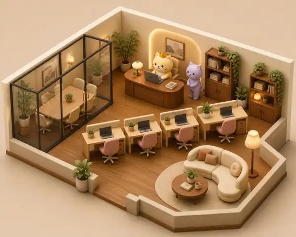

👑 냐웅 비서실 본부
대표님, 5개 파트가
대표님, 5개 파트가
대기 중이에요
방이나 캐릭터를 눌러 보세요. 파트별 최근 보고와 진행 상황을 바로 볼 수 있어요.
5개 파트 가동
👥 뚱냥이 외 5파트

파트 배지를 탭하면 오늘 기준 진행 현황이 열려요
🏛️ 대회의실
냐웅님 결정만
냐웅님 결정만
남은 안건 5건
확인해 주시면 그 자리에서 바로 이어서 진행할게요.
📋 작업실 · 자동 가동 스케줄
메일 돌아가는
메일 돌아가는
정기 루틴
냐웅님이 따로 챙기지 않아도 정해진 시각에 처리해요.
📊 비서현황
지금까지 해 둔 일
숫자는 실제로 끝난 것만 셉니다. 확인되지 않은 건 확인된 것처럼 적지 않아요.
👀 감시 상태
정상- 메일함 skypuck@naver.com 연결됨
- 최근 카드 감시 2026-11-28 03:17 · 신규 1건(하나카드)
- 다음 아침 브리핑 오늘 07:53 (자동)
- DM 발송 확인 2곳 · 나머지는 발송 여부 미확인
📝 메모
냐웅님 메모장
이 기기에만 저장돼요. 비서실 원칙 두 개는 고정으로 남겨 뒀습니다.
아직 메모가 없어요. 위에 적고 추가를 눌러 주세요.